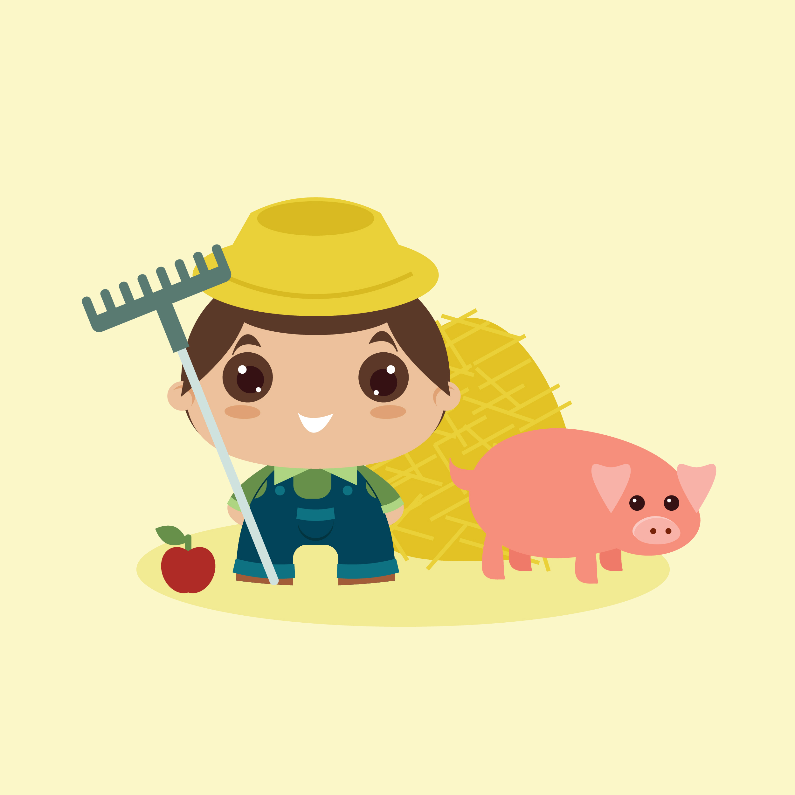
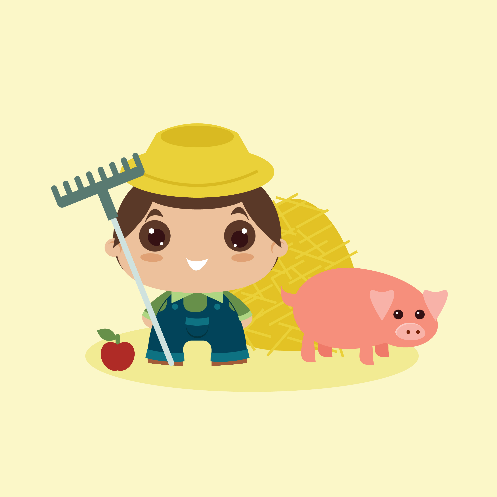

Home page
Welkom op mijn portfoliosite. Ontdek gerust mijn site en als je nog vragen hebt over mij of over mijn werk twijfel dan zeker niet om mij te contacteren.
 


Wie ben ik?
Ik ben Jasmijn De Keyser en ik zit in mijn eerste jaar Grafische en digitale media aan de AP Hogeschool in Antwerpen, zelf woon ik in Mol. Ik ben altijd creatief bezig geweest en doordat ik deze richting heb ontdekt kan ik nu mijn creativiteit de vrije loop laten gaan. Ik ben ook heel veel bezig met fotografie en heb dan ook mijn eigen klein bedrijfje opgericht 'Photography Criceto', dit om van het ondernemingsleven te proeven. Buiten het school kan je mij ook vaak bij de paarden vinden.
 ↓ Photoshop
↓ Photoshop
Photoshop
In de eerste module hebben wij vooral de basis gezien zoals de aanpassingslagen, effecten, maskers,... . In de tweede module mochten we zelf meer uitdagende oefeningen maken.
↓ IllustratorIllustrator
In de eerste module hebben wij vooral de basis gezien zoals hoe je met de pentool werkt, wat de pathfinder is,... In de tweede module mochten we dan meer tekeningen maken en kon je zelf beginnen experimenteren.

Photography Criceto
In mijn vrije tijd ben ik veel bezig met fotografie. Neem dan ook zeker een kijke op deze pagina.
↑ naar boven